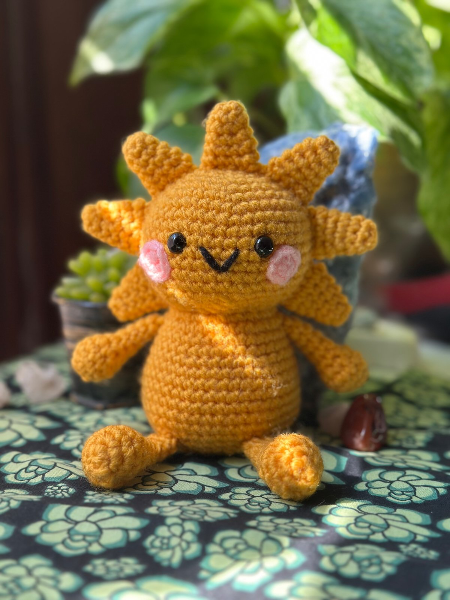

Independent textile artist & crochet pattern designer
Made with yarn.
Made with feeling.
I'm Wren Sage. I create original crochet designs, little oddities, wearable pieces, and patterns for people who love making things with their hands.
✳
original
designs
designs
a little
weird ♡
weird ♡
A growing collection of handmade things.
A little introduction
Things take shape
one stitch at a time.
This is where I share the work behind the stitches: finished pieces, original designs, patterns, experiments, and the occasional happy accident.

ソリー・ザ・サン。ピンクのほっぺと笑顔のある、マスタードイエローのかぎ針編みの太陽のあみぐるみが、少し斜めを向いて座っています。 Add a photograph of Solly here ✳Featured original design
Solly the Sun
A cheerful little sun with a plump shape, seven rays, and a face full of personality. Solly is an original amigurumi design and the first professionally published crochet pattern in my growing catalog.
Original
designs
Explore the collection ↗
02 / PATTERNS
Patterns
to make
Free & paid patterns ↗
03 / JOURNAL
Notes from
the worktable
Read the journal ↗
✿
Come say hello
Follow the thread.
For finished crochet, new patterns, and little things in progress.